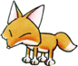

PRIMAVERA Dia Nome Onde você pode encontrar essa pessoa 2 Louis Na casa do Gotz 4 Bold Na casa dos duendes ou na sua fazenda 11 Saibara Em sua loja de ferreiro 15 Staid Na casa dos duendes ou na sua fazenda 16 Elli Na clinica 17 Barley No Yodel Farm(Fazenda Yodel) 19 Lillia Poultry Farm(Fazenda Poultry) 20* Elli Na clinica 26 Aqua Na casa dos duendes ou na sua fazenda 29 Greg Na Praia Mineral 30 Sasha Supermercado *Se seu aniversário cair no dia 16 da primavera VERÃO Dia Nome Onde você pode encontrar essa pessoa 3 Popuri Poultry Farm(Fazenda Poultry) 4 Harris Na hospedaria(INN) ou na casa do Gotz 6 Cliff Vinícola Aja ou na Igreja 10* Popuri Poultry Farm(Fazenda Poultry) 11 Basil Em sua casa 16 Timid Na casa dos duendes ou na sua fazenda 17 Ann Próxima a cachoeira ou na Hospedaria(INN) 22 Kai Na praia ou na Hospedaria(INN) 22* Ann Na Hospedaria(INN) 25 Prefeito Thomas(Mayor Thomas) Em sua casa 29 Zack Em sua casa ou quando ele vem pegar produtos na sua fazenda *Se seu aniversário cair no dia 3 de verão *Se seu aniversário cair no dia 17 de verão OUTONO Dia Nome Onde você pode encontrar essa pessoa 2 Gotz Em sua casa 5 Stu Igreja ou na casa de Ellen 10 Hoggy Na casa dos duendes ou na sua fazenda 11 Manna Vinícola Aja(Aja Winery) 14 Chef Na casa dos duendes ou na sua fazenda 15 Karen No Supermercado 17 Doctor Tim Na clinica 20 Pastor Carter Na igreja 22* Karen No Supermercado 22 Anna Em sua casa 27 Rick Poultry Farm(Fazenda Poultry) *Se seu aniversário cair no dia 15 de outono INVERNO Dia Nome Onde você pode encontrar essa pessoa 2 Kano Na casa do prefeito 6 Gray Na Loja do ferreiro 11 Doug Na Hospedaria 13 Ellen Em sua casa 15 Duke Vinícola Aja(Aja Winery) 19 Won Na hospedaria 20 Mary Na livraria 22 Nappy Na casa dos duendes ou na sua fazenda 25* Mary Na livraria 26 May Fazenda Yodel(Yodel Farm) 29 jeff Supermercado *Se seu aniversário cair no dia 20 de inverno Quando é o meu aniversário? O criador não se lembrou de mim...